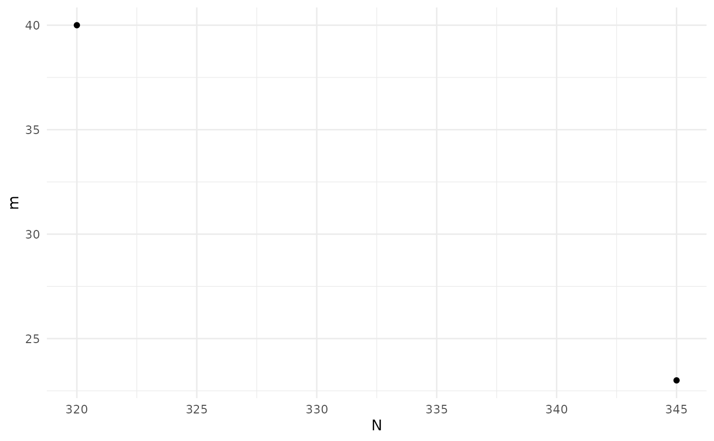
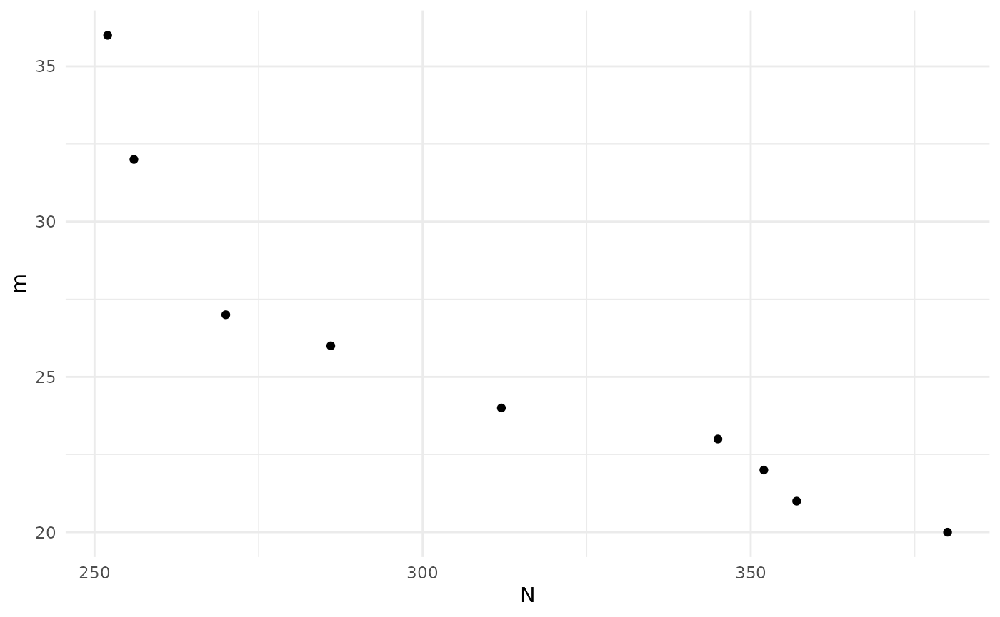
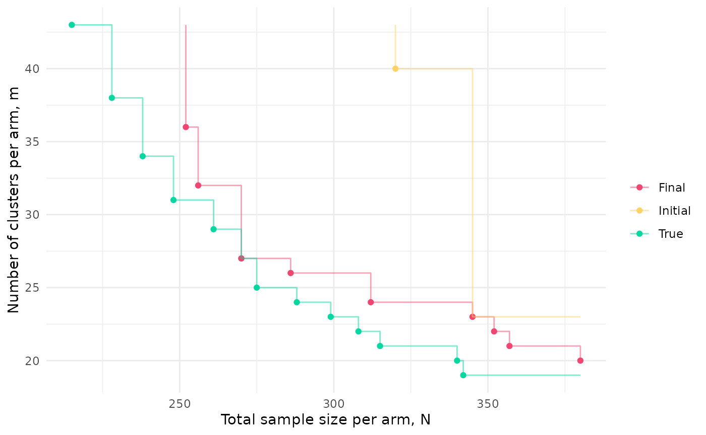

BOSSS
BOSSS.RmdEvery application of BOSSS follows the same set of steps:
- Formally specify the problem and create a corresponding
BOSSS_problemobject; - Create a
BOSSS_solutionobject and initialise it; - Perform a number of iterations, each one updating and (hopefully)
improving the
BOSSS_solutionobject; - Select a final design and run some diagnostics to check it is valid.
We will work through these steps here for an example problem: designing a cluster randomised trial, as discussed in Section 2 of the manuscript associated with the package. For more illustrations, see the article.
Problem
The first ingredient of a BOSSS problem is the simulation function.
The arguments of this function must first specify the design
variables which we want to vary in our problem, followed by the
model parameters. In this example we have two design variables
representing the number of clusters in each arm, and the number of
participants in each arm. The model parameters are the mean difference
in outcome between the control and experimental arms
(beta_1), the within-cluster variance (var_e),
and the between-cluster variance (var_u). Note that all of
these inputs require some defaults to be provided.
The other element of interface the simulation function must conform
to is in its return value, which should be a named vector of the
quantities who’s mean values we want to estimate using the Monte Carlo
method. Here, we have one such quantity: a boolean indicator of a
negative decision, s.
sim_cRCT <- function(m = 10, n = 20,
beta_1 = 0.3, var_e = 0.95, var_u = 0.05){
m <- floor(m); n <- floor(n)
x <- rep(c(0,1), each = m)
y <- rnorm(2*m, 0, sqrt(var_u + var_e/n))
y <- y + x*beta_1
s <- t.test(y[x==1], y[x==0], alternative = "greater")$p.value > 0.025
return(c(s = s))
}
# For example,
sim_cRCT()
#> s
#> FALSEIn our problem we are not just interested in the expected value of
s; we also want to minimise the number of clusters and the
number of participants. Since these are fixed quantities given any
design, we evaluate them in a separate deterministic function. This
should conform to the same principles as the simulation function, with
the same inputs, but allowing for different named outputs. Here, the
outputs are just m, and N = n*m:
det_cRCT <- function(m = 10, n = 5,
beta_1 = 0.3, var_e = 0.95, var_u = 0.05)
{
return(c(m = floor(m), N = floor(n)*floor(m)))
} Next, we need to note the ranges of the design variables which we
plan to search over. We use the design_space() function for
this, specifying the lower and upper limits of the design variables in
the order they appear as simulation function arguments:
design_space <- design_space(lower = c(10, 5),
upper = c(50, 20),
sim = sim_cRCT)
design_space
#> name lower upper
#> 1 m 10 50
#> 2 n 5 20Note that the function automatically retrieves the names of the design variables based on the order they take in the simulation function.
We also need to specify the hypotheses which we’re planning to
simulate under, using the hypotheses() function, again
specifying in the order that parameters appear as simulation function
argument. We only need one hypothesis here, the alternative, since we
will be estimating the type II error rate.
hypotheses <- hypotheses(values = matrix(c(0.3, 0.95, 0.05), ncol = 1),
hyp_names = c("alt"),
sim = sim_cRCT)
hypotheses
#> alt
#> beta_1 0.30
#> var_e 0.95
#> var_u 0.05Constraints should be specified using the constraints
function. Each constraint should be named, and should be defined with
respect to a specific output and a specific hypothesis. It should have a
nominal maximum value, and a probability delta used to
judge if it is satisfied. Here, our constraint is that the mean of the
simulation output (i.e. the probability of a negative result) under the
alt hypothesis should be less than or equal to 0.2 with a
probability of at least 0.95. Finally, we note whether the constraint
output is binary or otherwise.
constraints <- constraints(name = c("con_tII"),
out = c("s"),
hyp = c("alt"),
nom = c(0.2),
delta = c(0.95),
binary = c(TRUE))
constraints
#> name out hyp nom delta binary
#> 1 con_tII s alt 0.2 0.95 TRUEThe final ingredient of the problem is the set of objectives we want
to minimise. Similar to constraints, objectives are tied to a specific
output and hypothesis. We also specify weights for each objective which
help guide the internal optimisation process, and note whether or not
the output for each objective is binary or continuous. For example, here
we want to minimise both the number of patients N and the
number of clusters m, with the latter carrying a weight of
100 times that of the former.
objectives <- objectives(name = c("N", "m"),
out = c("N", "m"),
hyp = c("alt", "alt"),
weight = c(1, 10),
binary = c(FALSE, FALSE))
objectives
#> name out hyp weight binary
#> 1 N N alt 1 FALSE
#> 2 m m alt 10 FALSEWe now put this simulation function and set of data frames together
to create an object of class BOSSS_problem.
prob <- BOSSS_problem(sim_cRCT, design_space, hypotheses, objectives, constraints, det_func = det_cRCT)Initialisation
Having set up the problem, we now need to create an initial solution
to it. This involves setting up a space-filling set of designs spanning
the design space (where size is the number of designs),
computing the Monte Carlo estimates of all the expectations we are
interested in at each of these designs (using N samples for
each evaluation), fitting Gaussian Process models to these estimates,
and then using those models to estimate the Pareto set and front:
set.seed(9823579)
size <- 20
N <- 100
sol <- BOSSS_solution(size, N, prob)
#> Checking simulation speed...
#> Initialisation will take approximately 0.592622 secs
#> Solution found
print(sol)
#> Design variables for the Pareto set:
#>
#> m n
#> 2 40.00 8.75000
#> 19 23.75 15.78125
#>
#> Corresponding objective function values...
#>
#> N, alt (mean) m, alt (mean)
#> 2 320 40
#> 19 345 23
#>
#> ...and constraint function values:
#>
#> s, alt (mean) s, alt (var)
#> 2 -2.419826 0.1333284
#> 19 -1.442005 0.0646562
plot(sol)
sol_init <- solThe print() function will give a table of the Pareto set
with associated objective function values. The plot()
function will plot the Pareto front.
Iteration
We can now start improving this solution by calling the
iterate() function. Each call uses the fitted Gaussian
Process models to decide on the next design to be evaluated, computes
the Monte Carlo estimates at that point, and then updates the estimated
Pareto set and front.
N <- 100
for(i in 1:20) {
sol <- iterate(sol, prob, N)
}
print(sol)
#> Design variables for the Pareto set:
#>
#> m n
#> 19 23.75000 15.781250
#> 23 26.99935 11.997542
#> 26 20.99972 19.999855
#> 29 24.97515 13.999811
#> 31 32.99968 8.999911
#> 33 27.95746 10.990021
#> 34 36.93869 7.994242
#> 36 22.97379 16.990697
#> 40 21.99923 17.975259
#>
#> Corresponding objective function values...
#>
#> N, alt (mean) m, alt (mean)
#> 19 345 23
#> 23 286 26
#> 26 380 20
#> 29 312 24
#> 31 256 32
#> 33 270 27
#> 34 252 36
#> 36 352 22
#> 40 357 21
#>
#> ...and constraint function values:
#>
#> s, alt (mean) s, alt (var)
#> 19 -1.442005 0.06465620
#> 23 -1.507734 0.06737895
#> 26 -1.259177 0.05806410
#> 29 -1.648184 0.07389930
#> 31 -1.507734 0.06737895
#> 33 -1.317975 0.06003526
#> 34 -1.202247 0.05628104
#> 36 -1.576338 0.07043940
#> 40 -1.978171 0.09367830
plot(sol)
sol_final <- solWe can compare the initial and final approximations to the Pareto front to the actual front since, for this simple example, we can calculate power analytically:
df <- expand.grid(m = 10:50,
n = 5:20)
df$N <- df$m*df$n
df$clust_var <- 0.05 + 0.95/df$n
df$pow <- power.t.test(df$m, delta = 0.3, sd = sqrt(df$clust_var),
alternative = "one.sided", sig.level = 0.025)$power
df <- df[df$pow >= 0.8, c("m", "n", "N")]
df <- data.frame(paretoFilter(as.matrix(df)))
df$t <- "True"
df <- rbind(df, data.frame(m = c(floor(sol_init$p_set$m),
floor(sol_final$p_set$m)),
n = c(floor(sol_init$p_set$n),
floor(sol_final$p_set$n)),
N = c(floor(sol_init$p_set$N),
floor(sol_final$p_set$N)),
t = c(rep("Initial", nrow(sol_init$p_set)),
rep("Final", nrow(sol_final$p_set)))))
# Add ends of steps
df2 <- rbind(data.frame(m=rep(max(df$m), 3),
N=c(min(df[df$t == "Initial", "N"]),
min(df[df$t == "True", "N"]),
min(df[df$t == "Final", "N"])),
t=c("Initial", "True", "Final")),
df[,c("m", "N", "t")],
data.frame(m=c(min(df[df$t == "Initial", "m"]),
min(df[df$t == "True", "m"]),
min(df[df$t == "Final", "m"])),
N=rep(max(df$N), 3),
t=c("Initial", "True", "Final")))
ggplot(df, aes(N, m, colour = t)) + geom_point() +
xlab("Total sample size per arm, N") +
ylab("Number of clusters per arm, m") +
scale_colour_manual(name = "", values = c("#EF476F", "#FFD166", "#06D6A0")) +
geom_step(data=df2, alpha = 0.5) +
theme_minimal()
#ggsave(here("man", "figures", "cRCT_fronts.pdf"), height=9, width=14, units="cm")
# Tabulate results
df_init <- df[df$t == "Initial",]
p <- PS_empirical_ests(sol_init, prob)[[2]][,1]
df_init$pow <- 1 - 1/(1 + exp(-p))
df_init <- df_init[order(df_init$m), c(1,2,3,5)]
colnames(df_init) <- c("$m$", "$n$", "$N$", "power")
#print(xtable(df_init, digits = c(0,0,0,0,2)), booktabs = T, include.rownames = F, sanitize.text.function = function(x) {x}, floating = F, file = here("man", "tables", "cRCT_init.txt"))
df_final <- df[df$t == "Final",]
p <- PS_empirical_ests(sol_final, prob)[[2]][,1]
df_final$pow <- 1 - 1/(1 + exp(-p))
df_final <- df_final[order(df_final$m), c(1,2,3,5)]
colnames(df_final) <- c("$m$", "$n$", "$N$", "power")
#print(xtable(df_final, digits = c(0,0,0,0,2)), booktabs = T, include.rownames = F, sanitize.text.function = function(x) {x}, floating = F, file = here("man", "tables", "cRCT_final.txt"))Diagnostics
To check the GP models are giving sensible predictions, we can choose a specific design and then plot the predictions for each model along the range of each design variable.
# Pick a specific design from the Pareto set
design <- sol$p_set[1,]
ps <- diag_plots(design, prob, sol)
ps[[1]]
#ggsave(here("man", "figures", "cRCT_diag_m.pdf"), height=8, width=8, units="cm")
ps[[2]]
#ggsave(here("man", "figures", "cRCT_diag_n.pdf"), height=8, width=8, units="cm")We can also get the predicted values and 95% credible intervals for
each point we have evaluated, contrasting these with the empirical MC
estimate and interval. This will return a data frame for each of the
models, named according to the output-hypothesis combination which
defines it. We highlight with a * any points where the two
intervals do not overlap.
diag_predictions(prob, sol)
#> $`Output: s, hypothesis: alt`
#> m n MC_mean MC_l95 MC_u95 p_mean p_l95
#> 1 30.00000 12.500000 0.11155378 0.063118649 0.18963338 0.12762251 0.10772147
#> 2 40.00000 8.750000 0.08167331 0.041666820 0.15392252 0.13890888 0.11684352
#> 3 20.00000 16.250000 0.21115538 0.142069426 0.30201037 0.22166509 0.19147619
#> 4 25.00000 10.625000 0.18127490 0.117482371 0.26914262 0.22750507 0.19918432
#> 5 45.00000 18.125000 0.01195219 0.001988476 0.06841874 0.02556474 0.01226616
#> 6 35.00000 6.875000 0.23107570 0.158794949 0.32360083 0.23138686 0.20070363
#> 7 15.00000 14.375000 0.44023904 0.346374267 0.53858093 0.35342547 0.30492322
#> 8 17.50000 9.687500 0.40039841 0.309210032 0.49905109 0.38829725 0.33317646
#> 9 37.50000 17.187500 0.06175299 0.028329144 0.12936153 0.04308112 0.02818094
#> 10 47.50000 5.937500 0.20119522 0.133803478 0.29112177 0.19624201 0.14331310
#> 11 27.50000 13.437500 0.11155378 0.063118649 0.18963338 0.13983730 0.11872020
#> 12 22.50000 7.812500 0.37051793 0.281742889 0.46900021 0.35198590 0.29843680
#> 13 42.50000 15.312500 0.03187251 0.010672159 0.09130098 0.03995067 0.02444646
#> 14 32.50000 11.562500 0.10159363 0.055809001 0.17786349 0.12213350 0.10254115
#> 15 12.50000 19.062500 0.35059761 0.263632739 0.44876675 0.35459382 0.28675581
#> 16 13.75000 12.031250 0.35059761 0.263632739 0.44876675 0.41355431 0.35217076
#> 17 33.75000 19.531250 0.02191235 0.005838964 0.07872833 0.04749012 0.03065901
#> 18 43.75000 8.281250 0.12151394 0.070564158 0.20128432 0.13509492 0.10727229
#> 19 23.75000 15.781250 0.19123506 0.125606506 0.28016698 0.16106173 0.13743118
#> 20 28.75000 6.406250 0.28087649 0.201616667 0.37659748 0.30993552 0.25660633
#> 21 31.98561 8.998203 0.18127490 0.117482371 0.26914262 0.18663142 0.16437288
#> 22 21.99748 19.995216 0.17131474 0.109435453 0.25804488 0.15091308 0.12657099
#> 23 26.99935 11.997542 0.18127490 0.117482371 0.26914262 0.16935818 0.14637433
#> 24 21.99730 19.976786 0.12151394 0.070564158 0.20128432 0.15103828 0.12678562
#> 25 39.97274 6.988479 0.14143426 0.085811927 0.22426578 0.19393465 0.16840712
#> 26 20.99972 19.999855 0.22111554 0.150400931 0.31283581 0.16720993 0.14127366
#> 27 37.99189 6.993664 0.23107570 0.158794949 0.32360083 0.20584294 0.18005862
#> 28 39.99514 6.998776 0.18127490 0.117482371 0.26914262 0.19344642 0.16798199
#> 29 24.97515 13.999811 0.16135458 0.101470755 0.24686949 0.16480626 0.14107123
#> 30 39.99366 6.999902 0.26095618 0.184326258 0.35555664 0.19341562 0.16795954
#> 31 32.99968 8.999911 0.18127490 0.117482371 0.26914262 0.17763129 0.15617459
#> 32 35.95488 7.996821 0.19123506 0.125606506 0.28016698 0.18555315 0.16397734
#> 33 27.95746 10.990021 0.21115538 0.142069426 0.30201037 0.17805154 0.15493518
#> 34 36.93869 7.994242 0.23107570 0.158794949 0.32360083 0.17893502 0.15774364
#> 35 20.99066 19.995778 0.19123506 0.125606506 0.28016698 0.16739322 0.14146170
#> 36 22.97379 16.990697 0.17131474 0.109435453 0.25804488 0.16039072 0.13758832
#> 37 30.91326 9.949006 0.15139442 0.093594026 0.23561162 0.17071928 0.14900537
#> 38 20.99732 19.985637 0.12151394 0.070564158 0.20128432 0.16735196 0.14148721
#> 39 20.99805 19.995083 0.14143426 0.085811927 0.22426578 0.16727238 0.14135857
#> 40 21.99923 17.975259 0.12151394 0.070564158 0.20128432 0.16681275 0.14450253
#> p_u95 no_overlap
#> 1 0.15057972
#> 2 0.16436568
#> 3 0.25511186
#> 4 0.25855250
#> 5 0.05251463
#> 6 0.26520450
#> 7 0.40514579
#> 8 0.44643203
#> 9 0.06532988
#> 10 0.26272398
#> 11 0.16401151
#> 12 0.40953454
#> 13 0.06463631
#> 14 0.14486506
#> 15 0.42883130
#> 16 0.47774684
#> 17 0.07286656
#> 18 0.16876955
#> 19 0.18787045
#> 20 0.36884873
#> 21 0.21114250
#> 22 0.17897734
#> 23 0.19512602
#> 24 0.17897931
#> 25 0.22229731
#> 26 0.19681647
#> 27 0.23426463
#> 28 0.22174224
#> 29 0.19164367
#> 30 0.22170181
#> 31 0.20133254
#> 32 0.20925728
#> 33 0.20378516
#> 34 0.20228952
#> 35 0.19698761
#> 36 0.18615643
#> 37 0.19487286
#> 38 0.19686073
#> 39 0.19684762
#> 40 0.19179528In this example we see that the empirical estimates agree with the predictions for all of the designs which have been evaluated. Once we are happy with our solution and have chosen a specific design from the Pareto set, we might want to double check that point by running a large number of simulations at it:
design <- sol$p_set[1,]
r <- diag_check_point(design, prob, sol, N=10^5)
#> Model 1 prediction interval: [0.137, 0.188]
#> Model 1 empirical interval: [0.157, 0.161]At any point, but especially after initialisation, we may decide that
we need more points in our initial evaluations, or more simulations at
each of the points evaluated so far. We can do that via
extend_initial(). For example, suppose we started off with
only 10 evaluations at each of 6 initial designs:
set.seed(98579)
size <- 6
N <- 10
sol <- BOSSS_solution(size, N, prob)
#> Checking simulation speed...
#> Initialisation will take approximately 0.01507163 secs
#> Solution found
print(sol)
#> Design variables for the Pareto set:
#>
#> m n
#> 3 20 16.250
#> 4 25 10.625
#> 6 35 6.875
#>
#> Corresponding objective function values...
#>
#> N, alt (mean) m, alt (mean)
#> 3 320 20
#> 4 250 25
#> 6 210 35
#>
#> ...and constraint function values:
#>
#> s, alt (mean) s, alt (var)
#> 3 -1.3156768 0.5995565
#> 4 -1.3156768 0.5995565
#> 6 -0.3894648 0.4153610
plot(sol)
sol_init <- sol
# Take the first solution in the Pareto set and plot diagnostics:
sol$p_set[1,]
#> m n N m
#> 3 20 16.25 320 20
diag_plots(design, prob, sol)
#> [[1]]#>
#> [[2]]The diagnostic plots here show a GP model of the true power function
which is just a constant, which we know is not true. When we see a poor
initial fit like this we might want to add more simulations to designs
already evaluated, or add more designs, or both. We can use the
extend_initial() function for this. For example, suppose we
want an extra 4 designs and for every design to have 500
simulations:
sol <- extend_initial(prob, sol, extra_points = 4, extra_N = 490)
sol$p_set[1,]
#> m n N m
#> 10 47.5 5.9375 235 47
diag_plots(design, prob, sol)
#> [[1]]
#>
#> [[2]]Our lots now suggest a more plausible model.